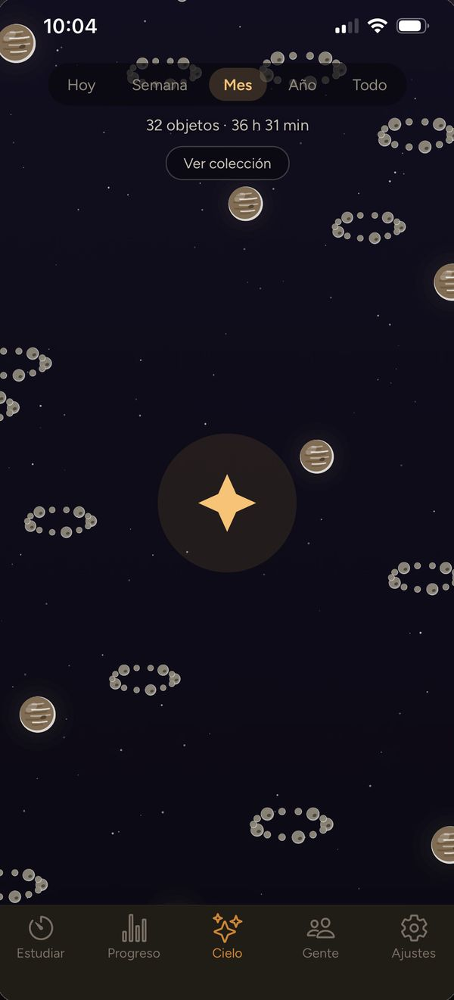

Tiempo efectivo y pausas, por separado
Cada sesión guarda cuánto estuviste concentrado, cuánto en pausa y cuántas veces paraste. De ahí sale tu porcentaje de concentración.

Mide lo que estudias, no lo que crees. Un cronómetro para opositores y universitarios que cuenta el tiempo efectivo y guarda las pausas aparte.

Cualquiera puede decir que ha estudiado ocho horas. Ster mide las que ha estudiado.
Cada sesión guarda cuánto estuviste concentrado, cuánto en pausa y cuántas veces paraste. De ahí sale tu porcentaje de concentración.

Eliges qué estás estudiando y Ster reparte tus horas por el temario. Al final ves dónde has echado el tiempo y dónde no has entrado todavía.

Con suficientes sesiones, Ster te dice en qué franja del día te concentras más que tu media. No es una opinión: son tus propios datos.

Cada sesión deja algo arriba. Las horas van desbloqueando satélites, planetas, cometas y nebulosas, y tu cielo acaba siendo el dibujo de los meses que llevas.
Constancia, de un vistazo. Un calendario del año entero donde se ve la racha, los días fuertes y los huecos.

Sondas. Te pones una meta con fecha —«180 horas para la convocatoria de junio»— y Ster te dice cada día si vas a llegar al ritmo que llevas.

Gente que prepara lo mismo. Grupos privados con quien tú elijas, con su clasificación. Se ve quién está estudiando ahora mismo, y eso tira más que cualquier recordatorio.

La app completa es gratuita: cronómetro, temario, histórico, cielo, grupos y logros. Ster Plus, por meses o por años, añade extras y ayuda a que esto siga en pie; los colores y fondos también se pueden comprar sueltos, una sola vez. Los precios están en la app.
Sin anuncios, y tus horas no se venden a nadie. Las horas, los logros y las rachas no se compran: se ganan estudiando.
Measure what you study, not what you think you did. A study timer that counts your focused time and keeps your breaks apart.
Anyone can say they studied for eight hours. Ster measures the ones they did.
Every session records how long you were focused, how long you paused and how many times you stopped. That gives you your focus rate.
Pick what you are studying and Ster spreads your hours across the syllabus, so you can see where your time went and what you haven’t touched yet.
With enough sessions, Ster tells you which time of day you focus better than your average. Not an opinion: your own data.
Every session leaves something up there. Your hours unlock moons, planets, comets and nebulae, and your sky ends up as a drawing of the months you’ve put in.
Consistency at a glance. A whole-year calendar showing your streak, your strong days and the gaps.
Probes. Set a goal with a date —“180 hours before the June exam”— and Ster tells you every day whether you’ll make it at your current pace.
People studying the same thing. Private groups with whoever you choose, with their own leaderboard. You can see who is studying right now, and that pulls harder than any reminder.
The full app is free: timer, syllabus, history, sky, groups and achievements. Ster Plus, monthly or yearly, adds extras and keeps the project going; colours and backgrounds can also be bought one by one, once. Prices are shown in the app.
No ads, and your hours aren’t sold to anyone. Hours, achievements and streaks can’t be bought: they’re earned by studying.